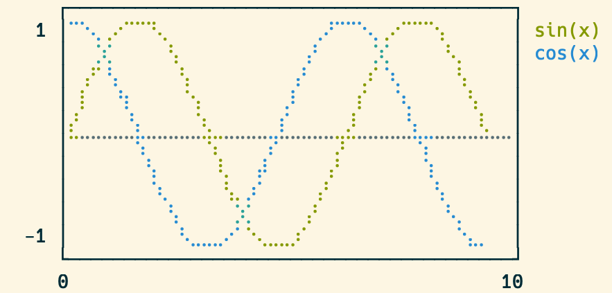
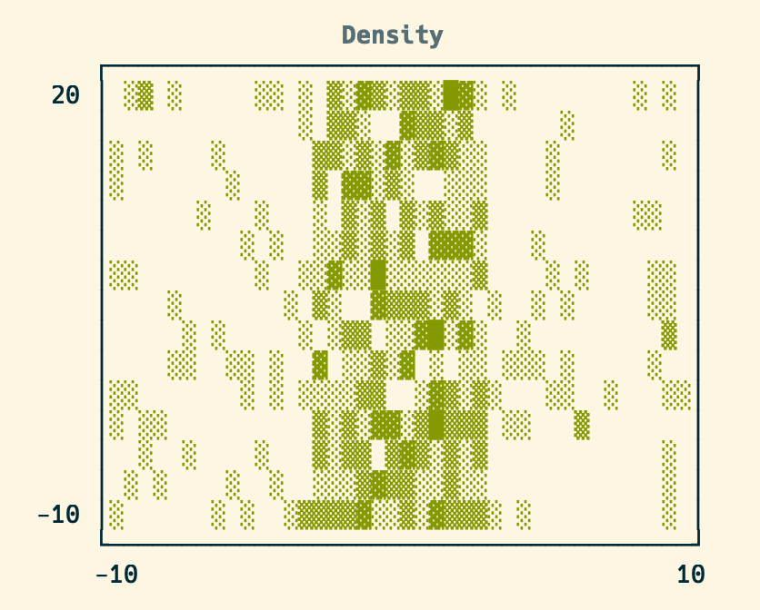

UnicodePlot - Plot your data by Unicode characters
UnicodePlot provides the feature to make charts with Unicode characters.
Documentation
https://red-data-tools.github.io/unicode_plot.rb/
Install
$ gem install unicode_plot
Usage
require 'unicode_plot'
x = 0.step(3*Math::PI, by: 3*Math::PI / 30)
y_sin = x.map {|xi| Math.sin(xi) }
y_cos = x.map {|xi| Math.cos(xi) }
plot = UnicodePlot.lineplot(x, y_sin, name: "sin(x)", width: 40, height: 10)
UnicodePlot.lineplot!(plot, x, y_cos, name: "cos(x)")
plot.render
You can get the results below by running the above script:

Supported charts
barplot
UnicodePlot.barplot(data: {'foo': 20, 'bar': 50}, title: "Bar").render

boxplot
UnicodePlot.boxplot(data: {foo: [1, 3, 5], bar: [3, 5, 7]}, title: "Box").render

densityplot
x = Array.new(500) { 20*rand - 10 } + Array.new(500) { 6*rand - 3 }
y = Array.new(1000) { 30*rand - 10 }
UnicodePlot.densityplot(x, y, title: "Density").render

histogram
x = Array.new(100) { rand(10) } + Array.new(100) { rand(30) + 10 }
UnicodePlot.histogram(x, title: "Histogram").render

lineplot
See Usage section above.
scatterplot
x = Array.new(50) { rand(20) - 10 }
y = x.map {|xx| xx*rand(30) - 10 }
UnicodePlot.scatterplot(x, y, title: "Scatter").render

Acknowledgement
This library is strongly inspired by UnicodePlot.jl.
License
MIT License